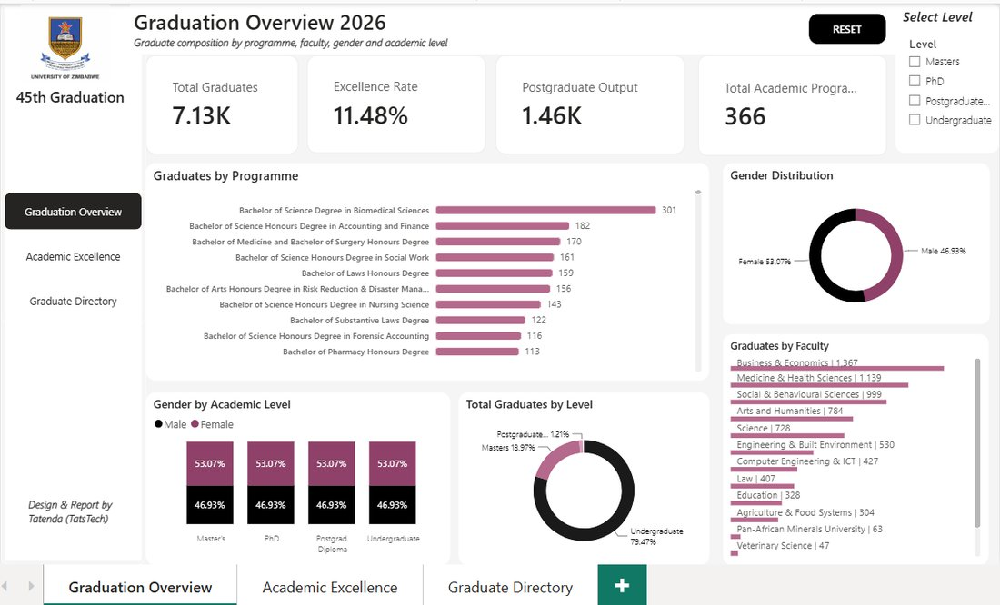
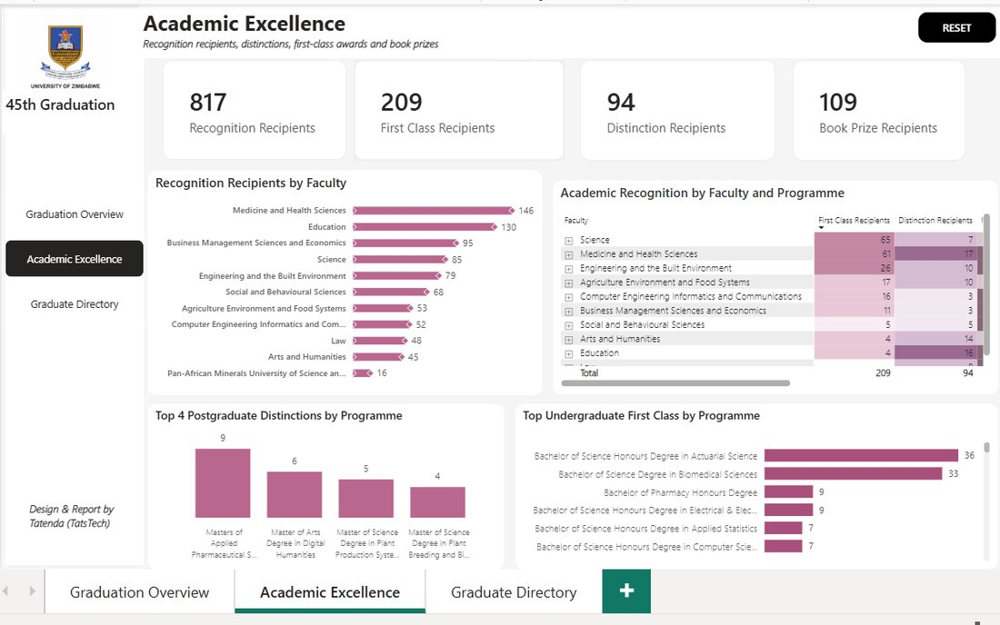
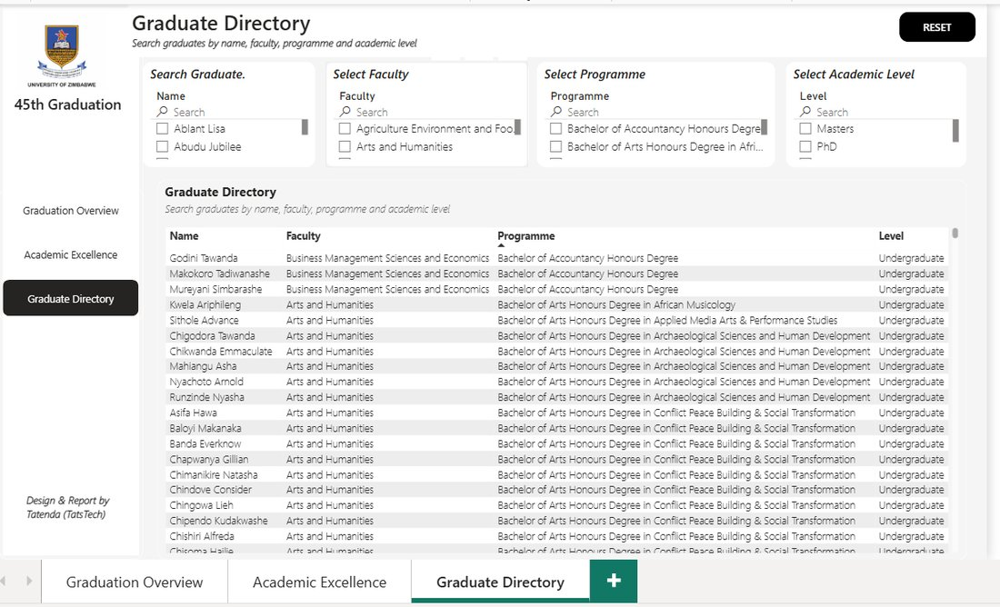

Can an 80-page printed graduation handbook become a three-page interactive dashboard?
That was the question I asked after the University of Zimbabwe held its 45th Graduation Ceremony. The idea sounded exciting, but there was one immediate challenge: the data was not available as a downloadable dataset, or even as a digital document. It existed inside a physical handbook handed out at the ceremony.
From printed pages to usable data
Instead of abandoning the idea, I contacted a graduate who had attended and arranged for every page to be photographed, then combined the images into a scanned PDF. A scanned PDF is not structured data, so I used Python and text-extraction techniques to retrieve the information, then cleaned and transformed it into a structured dataset. After several rounds of validation, modelling and reconciliation, the handbook became a three-page Power BI dashboard for the Class of 2026.
What the data revealed
- About 79% undergraduate and 21% postgraduate qualifications.
- Business Management Sciences & Economics produced the most graduates (1,367), then Medicine & Health Sciences (1,139).
- Biomedical Sciences was the largest single programme (301) and had the most Book Prizes (8).
- Actuarial Science led undergraduate First Class awards with 36, then Biomedical Sciences with 33.
- Academic recognitions were about 11.5% of all graduates.
Inside the three pages
1 · Graduation Overview
Graduate composition by faculty, programme, gender and academic level.

2 · Academic Excellence
First Class awards, distinctions, Book Prizes and other recognition across faculties and programmes.

3 · Graduate Directory
Searchable by name, faculty, programme and academic level, with slicers and reset.

More than building visuals
This project meant sourcing inaccessible data, converting images into text, cleaning inconsistent records, validating totals, building a relational model, writing DAX measures, and presenting it all as an interactive product. It reminded me that data does not always arrive in a clean spreadsheet — sometimes the real work begins with creating usable data from an unconventional source.
Tools: Python, Power BI, Power Query, DAX, Excel. Source: University of Zimbabwe 45th Graduation Handbook, 2026. This is an independently developed portfolio project, not an official University of Zimbabwe publication.